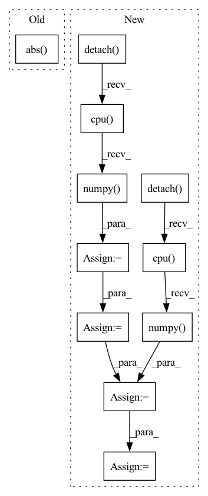

Pattern ID :20607

Before Change
// for learning the q functions
"(qfunc) Q1 pred": float(mean_of_unmasked_elements(Q1_predictions, b.m)),
"(qfunc) Q2 pred": float(mean_of_unmasked_elements(Q2_predictions, b.m)),
"(qfunc) Q1 Q2 pairwise abs diff": float(mean_of_unmasked_elements(torch.abs(Q1_predictions - Q2_predictions), b.m)),
"(qfunc) Q1 loss": float(Q1_loss),
"(qfunc) Q2 loss": float(Q2_loss),
// for learning the actor
After Change
polyak_update(targ_net=self.Q2_targ, pred_net=self.Q2, polyak=self.polyak)
m_numpy = b.m.pu().numpy().astype(bool)
Q1_predictions_numpy = Q1_predictions.detach().cpu().numpy()
Q2_predictions_numpy = Q2_predictions.detach().cpu().numpy()
Q1_predictions_filtered = Q1_predictions_numpy[m_numpy]
Q2_predictions_filtered = Q2_predictions_numpy[m_numpy]
corr_matrix = np.corrcoef(Q1_predictions_filtered, Q2_predictions_filtered)
corr = corr_matrix[0, 1]
return {
// for learning the q functions
In pattern: SUPERPATTERN
Frequency: 3
Non-data size: 11
Instances
Fragment ID: 66398772
Project Name: zhihanyang2022/off-policy-continuous-control
Commit Name: a66de6c52d4247eda06fcaf27a07ddd1724b9426
Time: 2021-09-30
Author: yangz2@carleton.edu
File Name: offpcc/algorithms_recurrent/recurrent_sac_sharing.py
M Class Name: RecurrentSACSharing
N Class Name: RecurrentSACSharing
M Method Name: update_networks(2)
N Method Name: update_networks(2)
M Parent Class: RecurrentOffPolicyRLAlgorithm
N Parent Class: RecurrentOffPolicyRLAlgorithm
M File Name: offpcc/algorithms_recurrent/recurrent_sac_sharing.py
N File Name: offpcc/algorithms_recurrent/recurrent_sac_sharing.py
M Start Line: 139
M End Line: 242
N Start Line: 139
N End Line: 252
'>
Before Change
"(qfunc) Q1 pred": float(mean_of_unmasked_elements(Q1_predictions, b.m)),
"(qfunc) Q2 pred": float(mean_of_unmasked_elements(Q2_predictions, b.m)),
"(qfunc) Q1 Q2 pairwise abs diff": float(
mean_of_unmasked_elements(torch.abs(Q1_predictions - Q2_predictions), b.m)),
"(qfunc) Q1 loss": float(Q1_loss),
"(qfunc) Q2 loss": float(Q2_loss),
// for learning the actor
After Change
polyak_update(targ_net=self.Q2_targ, pred_net=self.Q2, polyak=self.polyak)
m_numpy = b.m.pu().numpy().astype(bool)
Q1_predictions_numpy = Q1_predictions.detach().cpu().numpy()
Q2_predictions_numpy = Q2_predictions.detach().cpu().numpy()
Q1_predictions_filtered = Q1_predictions_numpy[m_numpy]
Q2_predictions_filtered = Q2_predictions_numpy[m_numpy]
corr_matrix = np.corrcoef(Q1_predictions_filtered, Q2_predictions_filtered)
corr = corr_matrix[0, 1]
return {
// for learning the q functions
'>
Fragment ID: 66398710
Project Name: zhihanyang2022/off-policy-continuous-control
Commit Name: a66de6c52d4247eda06fcaf27a07ddd1724b9426
Time: 2021-09-30
Author: yangz2@carleton.edu
File Name: offpcc/algorithms_recurrent/recurrent_sac.py
M Class Name: RecurrentSAC
N Class Name: RecurrentSAC
M Method Name: update_networks(2)
N Method Name: update_networks(2)
M Parent Class: RecurrentOffPolicyRLAlgorithm
N Parent Class: RecurrentOffPolicyRLAlgorithm
M File Name: offpcc/algorithms_recurrent/recurrent_sac.py
N File Name: offpcc/algorithms_recurrent/recurrent_sac.py
M Start Line: 147
M End Line: 253
N Start Line: 147
N End Line: 262
'>
Before Change
ratio = estimated_sources_amplitude / estimated_sources_amplitude.sum(dim=0)
estimated_sources = ratio * mixture
norm = max(1, torch.abs(mixture).max() / 10)
mixture, estimated_sources = mixture / norm, estimated_sources / norm
estimated_sources = update_em(mixture, estimated_sources, iterations, eps=eps)
estimated_sources = norm * estimated_sources
After Change
device = mixture.device
dtype = mixture.dtype
mixture = mixture.detach().cpu().numpy()
estimated_amplitude = estimated_amplitude.detach().cpu().numpy()
mixture = mixture.transpose(2, 1, 0)
estimated_amplitude = estimated_amplitude.transpose(3, 2, 1, 0)
estimated_sources = norbert.wiener(estimated_amplitude, mixture, eps=eps)
estimated_sources = estimated_sources.transpose(3, 2, 1, 0)
estimated_sources = torch.from_numpy(estimated_sources).to(device, dtype)
return estimated_sources
'>
Fragment ID: 66398774
Project Name: tky823/dnn-based_source_separation
Commit Name: 11a2e82888f76547df72eff58c6a592e3473e65c
Time: 2021-08-20
Author: 40362510+tky823@users.noreply.github.com
File Name: egs/musdb18/d3net/src/adhoc_driver.py
M Class Name: AnonimousClass
N Class Name: AnonimousClass
M Method Name: apply_multichannel_wiener_filter(4)
N Method Name: apply_multichannel_wiener_filter(5)
M Parent Class:
N Parent Class:
M File Name: egs/musdb18/d3net/src/adhoc_driver.py
N File Name: egs/musdb18/d3net/src/adhoc_driver.py
M Start Line: 383
M End Line: 401
N Start Line: 397
N End Line: 413